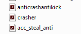

How to open SWF files
So, you probably get there beacuse of you dont know how to open SWF files. There is how to do it.
After getting the projector, move it to easy to reach folder. Click right mouse button to your SWF file, then click "open with" and choose programm from location. Find the projector and open
When you open SWF you will see nothing. Here is fix. CLick RMB at your screen, click "global settings" option. Find trusted locations and acc location C:\ (It will trust every SWF at pc, trusted location is optional for you.)
Didnt worked? Add other location, depends on where you placed it. Most common - C: disk